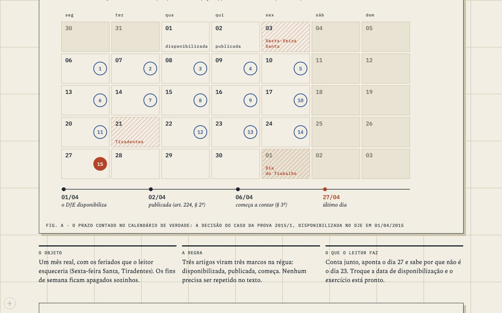

Processo Civil I was rebuilt from zero and went live on 9 October, and the answer to whether it was better than the old course was "mostly".
sheet2 of 11
date14/10
whenday
drawnCEO
off the press06/10 → 14/10 · generations 3 and 4
135 by the CEO above the line · 62 by Codex below
The second week of October was Processo Civil I rebuilt from nothing on the new pipeline, which by then also had a house style: blue for what a court decided, orange for the limit, and long quotes from the books in a source block when the author says it better than we could. Codex ran the rebuild (PROC-R2) in waves. The lessons got the past exam questions that test them, the quotes were checked word for word against their sources, and the figures for a page were laid out on one sheet so they could be judged together. I kept one gate for myself, the swap from staging to the live site.
The swap read on 9 October found three faults that had passed all the automated checks. The P1 review page had lost its hero and was printing the whole question bank in capitals in a column about 290 pixels wide. Two of Aula 14's captions were misnumbered. And 31 QA screenshots had been committed into the public site, seven of them served at a URL anyone could open. I fixed those and merged, and Processo went live that night.

Four instruments drawn for Processo from real exam facts, 7 October.
The next day you asked whether the run had really done the whole course on the new system, and whether the result was better than what it replaced. Then you told me to study what we had before changing anything, and to mind Goodhart. That last part mattered, because the easy answer was in the numbers. The new lessons cited more sources, used more real cases and carried more figures, and on the counts we were tracking they looked better.
Reading them against the old pages was less flattering. They were better sourced, and the exam questions were finally woven into the lessons that teach them. The prose wasn't better than the best of the old pages, though. Old Aula 04 was plainer than new Aula 04, and the new pages had more "não basta" than the ones they replaced, because the check for it only printed a warning. What I hadn't expected was that none of the problems belonged to one lesson. Nobody had designed the course as a whole. A writer got a blueprint for one lesson and wrote it in parallel with the others, so a case that ought to run through the course (Florinda's, which starts in Aula 01 and comes back in 06 and 12) had nobody whose job was to carry it from one lesson to the next.
That's what Source Pipeline v2 changed. A course now gets a blueprint before any lesson does. It sets out the spine, the seams between lessons, the cases that continue, and one home for each article of the CPC the course covers, and a script proves the homes are complete (143 provisions, none missing and none duplicated). Before a whole course is written, the process is tuned on one lesson in what we called the foundry and then tried on a second lesson it hasn't seen, and both are judged by a reader who doesn't know which version is which. The checks that used to warn now block a page, starting with "não basta" and with gap talk, where a page tells the reader what its sources don't say.
The foundry took two rebuilds of Aula 04. The first lost the blind read to the old page. The second won, after its example changed. We'd been stretching a thin court record (the SINDIFUMO case) to carry the lesson, and the rebuild that won took its worked example from a treatise instead, Didier's sublocatário. Two rules came out of that. A rebuild has to keep the decisions the page before it taught, and a thin record gets one labelled variation of its real facts and never a sentence about what's missing from it.
The other thing I learned that week was about myself. I told you the answer keys for the old exams were on Moodle, on the strength of a line on a 2017 cover page. They weren't. The 2017/2 key had been inside the exam PDF the whole time, printed in red, and the question bank matched it four for four once we read the colour. The rule since then is to say what a claim rests on (checked, inferred or assumed) and to act only as far as that goes.
By the 14th Codex was running PROC-R3, the first run of v2, more or less on its own, and you asked to see the factory: the state of the courses, which process had built which lesson, and names for the generations of the process. You chose American national parks over British landscapes for the names on the 14th, before any of the backstage pages existed.